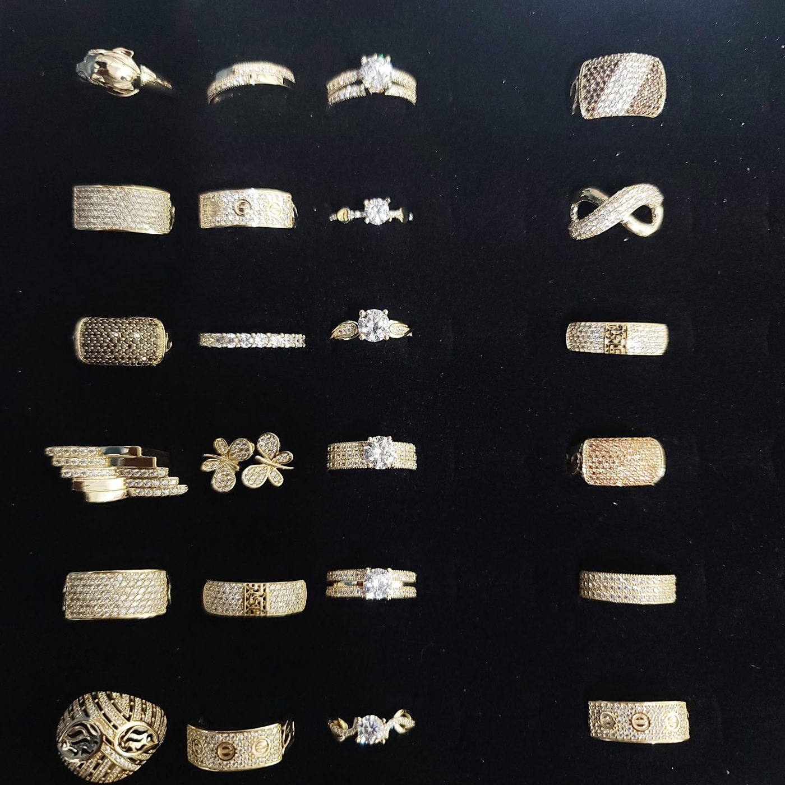

Jewellery repair & custom work · Downtown Toronto
Broken, loose or too big? Often fixed the same day.
A 5th-floor workshop at 107 Church St. Reviewers say Sorin repairs chains, resizes rings and resets stones, often while they wait.
- Same-day repairs
- Ring resizing
- Heirloom restoration
- Fair prices
What Anni Jewelry does
Repairs
Broken chains, bracelet clasps and links, earrings, loose diamonds and chipped prongs. Reviewers describe repairs done in minutes or hours.
Resizing & adjustments
Rings resized in 24 hours or the same day, plus sizing beads for rings that spin.
Restoration & custom pieces
Heirloom rings restored and polished. Google lists the shop as a jeweler, jewelry designer and manufacturer.
This summary comes from Google reviews and the categories on the Google listing. The shop doesn’t publish prices, so none are shown. Call or drop in for an estimate.
Customer story · Ring resizing
Resized in 24 hours
“So happy with how my newly resized rings turned out! They look brand new! Sorin did a beautiful job in just 24 hours for a very reasonable price.”
Christelle Fraser, Google review · photo hers
What customers say
4.9 ★ from 334 Google reviews (checked Nov 3, 2026). Quotes are word for word. Each one says where it was read: on the Google listing itself, or on a public page that copies reviews. The full Google review list can’t be opened without signing in, so some quotes come from a directory copy that shows only first names and no stars. Reviewers sometimes write “Anni Jewellery,” and we’ve left each one as written.
★★★★★
Anni Jewellery truly stands out! The receptionist at the front desk was incredibly welcoming and professional. I visited to get an estimate to repair a link on a sterling silver bracelet that's very sentimental to me. She kindly examined it and reassured me it wouldn't be a problem. Then she asked me to take a seat. I hardly got comfortable before she came back with my bracelet, all fixed and ready to go. I couldn't help but feel both amazed and quite honestly shocked by how quickly it was repaired. This is a premium business. They are better than 5 stars and I will 100% recommend this business. 🙏🏼
★★★★★
So happy with how my newly resized rings turned out! They look brand new! Sorin did a beautiful job in just 24 hours for a very reasonable price. I will be back for future jewelry needs!
★★★★★
I absolutely cannot recommend Anni Jewelry enough! I have tiny fingers with big knuckles, and no matter how much I size down my ring, it would spin around my finger like crazy. Sorin is super friendly and awesome. He polished and add sizing beads to my ring in just a day, and my ring has stopped spinning ever since. When I picked it up, I couldn’t even believe that my ring could look as new as when I first received it. It was gorgeous! I even went back to make minor adjustments, and Sorin was able to do the adjustments right on the spot. The craftsmanship is incredible with great turnaround. I love Anni Jewelry! 100000/10
★★★★★
Absolutely amazing quick service! Went a couple days ago to get my bracelet repaired and it was done within a couple hours! Great service and very friendly will definitely be coming back for the great pricing as well:) Got a free pair of earrings which was nice too!
★★★★★
I had a great experience with Anni Jewelry! I brought in a two that were either damaged or in need of resizing, and they did an absolutely beautiful job restoring them. The craftsmanship was flawless, and the rings came back looking even better than I remembered. The staff were friendly, professional, and clearly passionate about their work. I really appreciated the care they took with each piece. Highly recommend Anni Jewelry for any repairs or custom work they truly go above and beyond!
Star rating not shown in source
I went to get my ring repaired as one of the stones was missing and he was able to fix it within an hour! Super efficient and reasonable price. He's located on the 5th floor. Highly recommend, thank you Sorin!
Star rating not shown in source
Lovely father and son team. Fixed my necklace immediately while I waited. Even polished my ring free of charge. A pleasure to work with and very knowledgable about their craft!
Star rating not shown in source
This place is hands down the best jewellery repair shop in Toronto. Sorin (the owner) fixed my gold necklace with no hassle and extremely fast. It is super affordable and he’s a an amazingly kind man. Must check him out.
Star rating not shown in source
He did such an amazing job fixing my earrings! It was fixed within a few minutes and it's perfect now! He is so kind and very skillful at what he does, I highly recommend coming here, best spot in Toronto. Finding him was a little tricky but the workshop is located upstairs in the building!
Star rating not shown in source
Sorin was a pleasure to work with! He was quick and very thoughtful about his approach. He takes his craft seriously and went above and beyond to complete the work with top notch quality. I would absolutely recommend him and will be going back in the future!
Star rating not shown in source
I had a crystal missing in my ring and they were able to replace it on the spot at a very reasonable price. This place is on the 5th floor!
From the workshop
Real photos from Anni Jewelry’s public Google listing and its customers’ reviews. Tap to enlarge.
Find the workshop
107 Church St, Unit 500 (5th floor)
Toronto, ON M5C 1P1
| Monday | 10 a.m.–6 p.m. |
|---|---|
| Tuesday | 10 a.m.–6 p.m. |
| Wednesday | 10 a.m.–6 p.m. |
| Thursday | 10 a.m.–6 p.m. |
| Friday | 10 a.m.–6 p.m. |
| Saturday | Closed |
| Sunday | Closed |
These are the hours on Google today. The shop is upstairs on the 5th floor (Unit 500). One phone number caveat: a business card photographed on the Google listing gives (647) 339-3863, while Google lists (647) 616-3415.